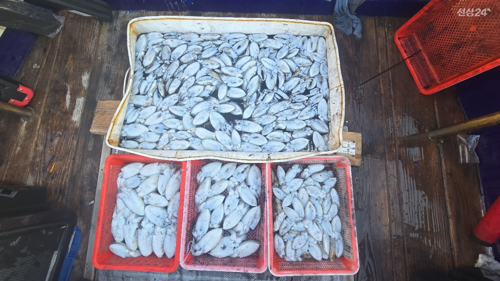
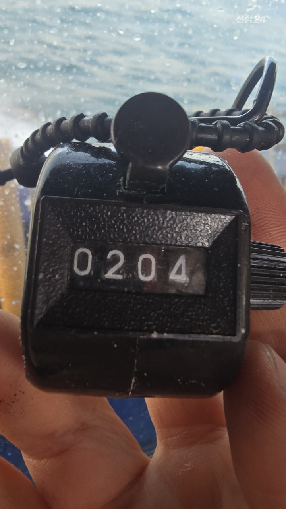
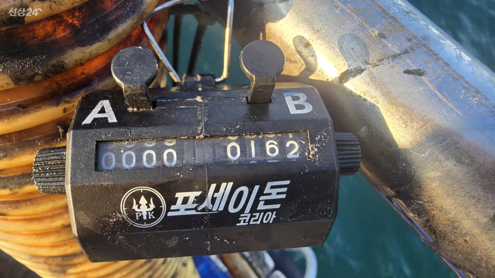

2026-09-16 · 군산 뚱스호
9/16 [군산 뚱스호]_갑오징어 종일반 조황_군산에 어마어마한 갑오징어를 발견했습니다. 9/16 [군산 뚱스호]_갑오징어 종일반 조황_군산에 어마어마한 갑오징어를 발견했습니다. 9월부터 본격적으로 갑오징어 출조를 시작했고군산 먼바다에 엄청난 양의 갑오징어를 발견했습니다6년동안 단한번도
9/16 [군산 뚱스호]_갑오징어 종일반 조황_군산에 어마어마한 갑오징어를 발견했습니다. 9/16 [군산 뚱스호]_갑오징어 종일반 조황_군산에 어마어마한 갑오징어를 발견했습니다. 9월부터 본격적으로 갑오징어 출조를 시작했고군산 먼바다에 엄청난 양의 갑오징어를 발견했습니다6년동안 단한번도 느끼지 못할양의 개체수였고시기에 비해 사이즈도 괜찮은 상태였습니다물론 라인을 잘못 태우면 작은 사이즈들도 나오지만그건 뻘땅의 특성상 11월에도 있는현상이며작은 갑오징어만 나오는것은 아닌걸 아셨으면 좋겠습니다그리고 지난 일주일간 정말 많은 양의 갑오징어를 잡았고최근 이틀간 조황을 보여드리면 15일은 16명출항 14명 100갑오버 그리고 200갑 오버도 나왔고 배전체 평균이 130마리가 될정도로 어마어마하게 많은 양이 있습니다16일 오늘 역시 16인중에 14명이 100갑오버이고 평균 120갑이상씩 다하신 상태입니다이미 오셨던분들은 아셨지만 하루에 못해도 다섯분 이상씩 100갑을 하셨고 사이즈도 점점 커지고있는 상황입니다군산 먼먼바다에 갑오징어가 쏟아집니다 군산에 고기 없다고 생각하지 마시고 서군산낚시 (서해안/비응항) 1.7km 갑오징어 2026. 9. 16 | 조회 1,075 서군산낚시 (서해안/비응항) 2026. 9. 16 | 조회 1,075
![9/16 [군산 뚱스호]_갑오징어 종일반 조황_군산에 어마어마한 갑오징어를 발견했습니다. 9/16 [군산 뚱스호]_갑오징어 종일반 조황_군산에 어마어마한 갑오징어를 발견했습니다. 9월부터 본격적으로 갑오징어 출조를 시작했고군산 먼바다에 엄청난 양의 갑오징어를 발견했습니다6년동안 단한번도](../assets/photos/ddoongs_httpsseosunsang24comshipboard_detail409003_01.jpg)


